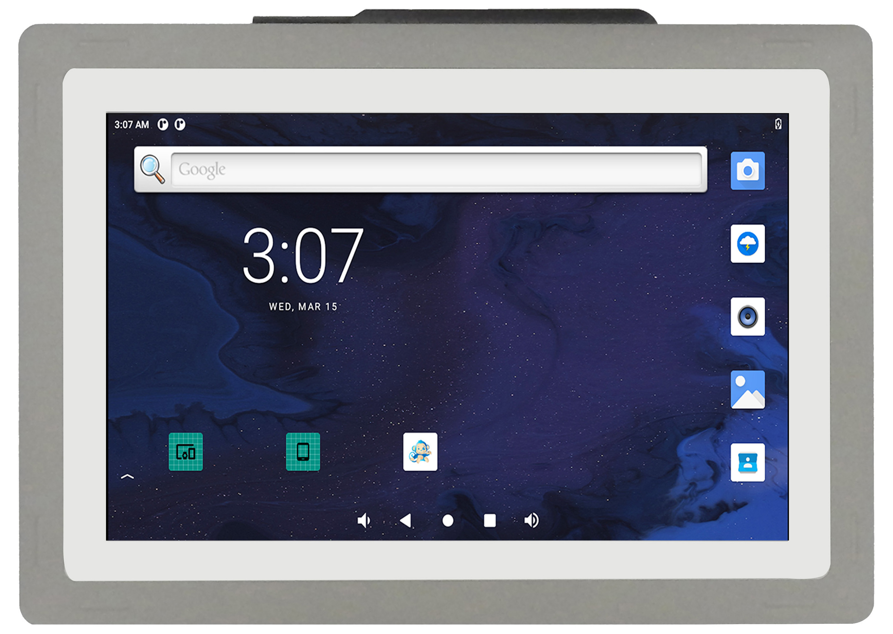
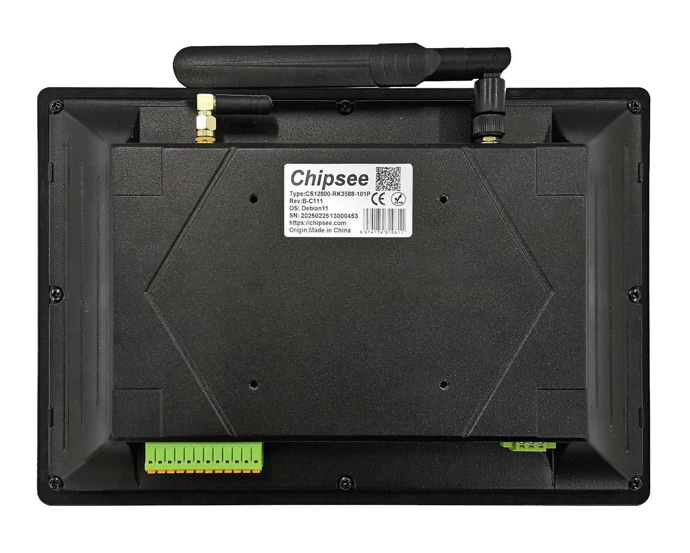
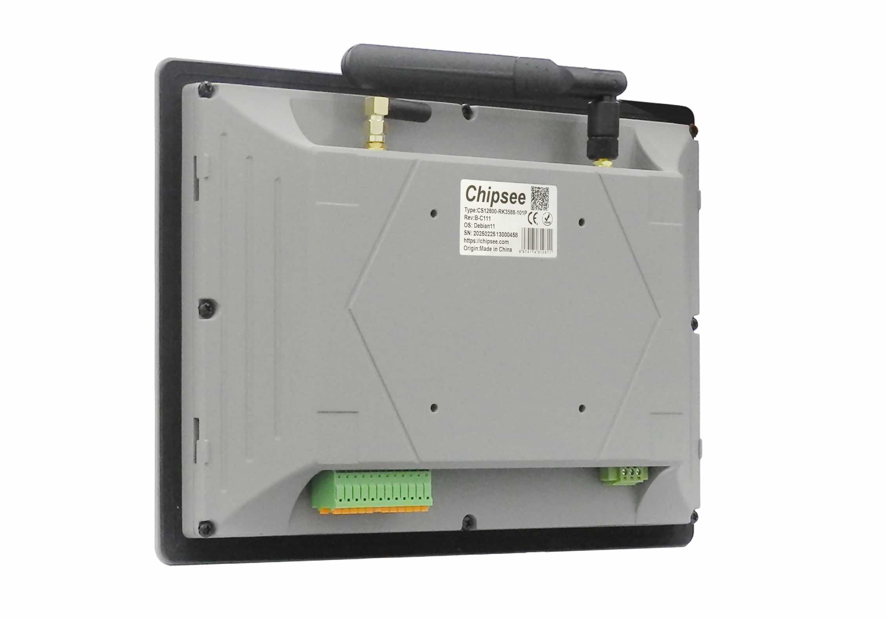
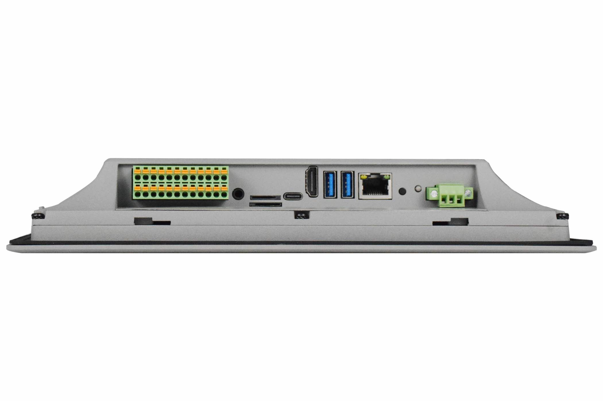

PPC-A76-101¶
Version 1.0




Product Overview¶
The Cortex®-A76 series PPC-A76-101 (PN: CS12800-RK3588-101P) is a high-quality IP65-compliant industrial panel PC. This single board computer features a 10.1” 10-point capacitive touch screen with a resolution of 1280 x 800 pixels and brightness of 400 cd/m2.
It is available as a device hosed in an aluminum casing with bezels, thus facilitating different installation options:
Installation on an industrial cabinet
Integration with the existing equipment
The PPC-A76-101 Industrial Panel PC is based around the powerful RK3588J System on Chip (SoC), powered by the Rockchip RK3588J low-power processor which integrates a Quad(4)-core Cortex®-A76 (2.0GHz) and Quad(4)-core Cortex®-A55 (1.8GHz) processor.
The RK3588J supports multi-format video decoders and has a high-performance 8GB LPDDR4 RAM capable of sustaining demanding memory bandwidths. It also provides a complete set of peripheral interfaces.
Ordering Options¶
Chipsee products can be customized during the ordering process. The product will be shipped with the pre-installed factory defaults if no extra requirements are specified. The table in the Hardware Features section provides information about the default options bundled with the product.
Note
You can order the PPC-A76-101 from the official Chipsee Store or from your nearest distributor.
Operating System¶
This product comes with a pre-installed OS of your choice. Please see the list below for the supported OSes, which can also be obtained from the Software Documentation section, along with the detailed installation instructions.
Debian 11
Buildroot Linux Qt 5.15
Warning
The Software Documentation section provides a detailed instruction on how to install different OSes on your own. However, bear in mind that Chipsee can’t take the responsibility of inadequate installation procedure. If you “brick” your device, please contact Chipsee Technical Support at support@chipsee.com for further assistance
Optional Features¶
The PPC-A76-101 Industrial Panel PC does not include 4G/LTE module by default. The module is optional and can be selected at the Chipsee store during the ordering process.
The product has 1 x PCIe3.0 x4, M.2 M-Key 2230/2242/2260/2280 socket (optional), you can use it with a NVMe SSD or other modules such as a AI compute module that can fit in the slot and supports the protocol. By default, SSD or AI module is not included; by default M.2 slot is not mounted. Please contact us before placing an order if you need M.2 slot or M.2 devices.
Warning
Installation, repair, and maintenance tasks should be performed by trained personnel only. Chipsee does not bear any responsibility for damage caused by inadequate handling of the product.
Hardware Features¶
The PPC-A76-101 Industrial Panel PC offers a broad range of performance and connectivity options for scalable integration, providing expandability according to future needs. Some of the key features are listed in the table below.
PPC-A76-101 |
|
|---|---|
CPU |
Rockchip RK3588J, Quad(4)-core Cortex-A76 (2.0GHz) and Quad(4)-core Cortex-A55 (1.8GHz) |
GPU |
ARM Mali-G610 MC4. Up to 8K60 FPS video decoding, up to 8K30 FPS video encoding. |
NPU |
Neural network acceleration engine with 6Tops int8, support Int4/8/16/FP16/BF16/TF32. |
RAM |
8GB LPDDR4 |
eMMC |
64GB |
PCIe |
1 x PCIe3.0 x4, M.2 M-Key 2230/2242/2260/2280 socket (optional) |
Storage |
TF Card, Supports up to 128GB SDHC |
Display |
10.1” LCD, 1280 x 800, High Brightness: 400 cd/m2 |
HDMI |
1 x HDMI 2.0 Out |
Touch |
10-point capacitive touch screen |
USB |
2 x USB 3.0 HOST, 1 x USB Type-C1 |
LAN |
1 x RJ45, GbE |
POE |
N/A |
Audio |
3.5mm Audio In/Out Connector, 2W Internal Speaker |
Buzzer |
Yes |
RTC |
High accuracy RTC with farad capacitor, can work 1 week after power off (default). High accuracy RTC with lithium coin battery, can work 3 years after power off (optional). |
RS232 |
default 2 x RS232 (Optional 6 x RS232 at most, including 1 debug port)2 |
RS485 |
default 2 x RS485 at most2 |
CAN |
default 2 x CAN FD |
GPIO |
8 Channels Isolated IO, 4 x Input and 4 x Output |
WiFi/BT |
Integrated WiFi/BT Module |
4G/LTE |
Supported, Optional |
Power Input |
From 15V to 30V (supports optional 24V ignition signal) |
Current |
700mA max at 15V, 400mA typical at 15V |
Power Consumption |
10.5W max, 6W typical |
Working Temperature |
From -20°C to +70°C |
OS |
Debian11, Buildroot Linux Qt 5.15 |
Dimensions |
PPC-A76-101 (PN: CS12800-RK3588-101P): 275.5 x 193.5 x 46.0mm |
Weight |
PPC-A76-101 (PN: CS12800-RK3588-101P): 1300g |
Mounting |
PPC-A76-101 (PN: CS12800-RK3588-101P): Panel, VESA |
- 1
The USB-A host (near HDMI port) and USB-C can’t be used at the same time. Before boot into OS, USB-C is enabled for install OS image; after boot into OS, USB-A is enabled but USB-C is disabled. In Android, these can be configured; in Linux, these can’t be configured.
- 2(1,2)
This product has 6 x UART channels in total. The default configuration is 2 x RS232 and 2 x RS485, including 1 debug port. CAN0 and CAN1 can be configured to RS232. UART can be swapped between RS232 and RS485 modes easily, if you need a different RS232/RS485 configuration, please get in touch with the Chipsee Technical Support at support@chipsee.com
Power Input¶
The PPC-A76-101 Industrial Panel PC can be powered by a wide range of input voltages: From 15V to 30V (supports optional 24V ignition signal) DC.
There is a 3-pin, 3.81mm terminal on the board.
{kind=link}
Power Input
Note that the “+” sign represents the positive power input. The “-” terminal is shorted to the ground.
Default Connector¶
By default, the 3 pins are +, - and ground.
Power Input Definition |
||
|---|---|---|
Pin Number |
Definition |
Description |
Pin 1 |
Positive Input |
DC Power Positive Terminal |
Pin 2 |
Negative Input |
DC Power Negative Terminal |
Pin 3 |
Ground |
Power System Ground |
Note
The system ground “G” is connected to power negative “-” on board.
Ignition Signal¶
The product has a “ignition signal” optional feature. By default the ignition signal is not installed. If you need this feature you can contact us when placing an order. In this setup, Pin 3 is the ignition signal pin.
To use this feature, apply a 24V DC input (relative to -) to Pin 3. If Pin 3 detects a low input voltage, the product will be shutdown. If Pin 3 detects a high input voltage, the product will be boot and running.
{kind=link}
Power Input (with Ignition Signal)
Power Input Definition |
||
|---|---|---|
Pin Number |
Definition |
Description |
Pin 1 |
Positive Input |
DC Power Positive Terminal |
Pin 2 |
Negative Input |
DC Power Negative Terminal |
Pin 3 |
Ignition |
Ignition Signal |
Touch Screen¶
The PPC-A76-101 Industrial Panel PC uses a 10-point capacitive touch screen.

Capacitive Touch Screen Connector¶
Attention
A capacitive touch screen is susceptible to power noise and Electromagnetic Radiation (EMR). It may cause LCD ripples or even capacitive touch malfunction. If using a capacitive multi-touch test application, you might notice the touch points float erratically across the display. There are several solutions to this problem:
Use a high-quality Power Adapter Unit (PSU) with low EMR. You can also provide power from a battery.
Make sure that the PPC-A76-101 Power Input connector (pin 3) is properly connected to the Power System Ground to provide sufficient EMI shielding and eliminate the problem entirely.
Bad GND problems can also be confirmed by touching pin 3 of the Power Input connector with one hand while operating the capacitive touch screen with the other hand. In this case, the operator’s body acts as the Power System Ground.
Connectivity¶
There are many connectivity options available on the PPC-A76-101 industrial PC. It has 2 x USB 3.0 HOST, 1 x USB Type-C, 1 x network connector (RJ45) supporting up to 1 Gbps, 8 x GPIO, 2 x CAN FD and 4 x UART terminals (RS232/485).
RS232/RS485/CAN¶
The serial communication interfaces (RS485, RS232, and CAN FD) are routed to a 24-pin 3.81mm terminal, as illustrated in the figure below.
Serial communication on both RS485 and RS232 interfaces can reach up to 115200 kbps.
Attention
The 120Ω match resistor for CAN bus is NOT mounted by default.
The 120Ω match resistor for RS485 is NOT mounted by default.
RS485_3 and RS485_4 can control the input and output direction automatically. There’s no need to control it from within the software.
This product supports changing 2 x RS485 to 2 x RS232, supports changing 2 x CAN to 2 x RS232, providing up to 6 x RS232 (including one debug port).
{kind=link}
RS232 RS485 CAN Pins
The table below offers a detailed description of every pin:
RS232 / RS485 / CAN |
||||
|---|---|---|---|---|
Pin Number |
Definition |
Description |
CPU |
OS Node |
Pin 1 |
CAN0_H |
CAN H signal |
CAN1_M1 |
CAN0 |
Pin 3 |
CAN0_L |
CAN L signal |
||
Pin 5 |
RS485_4- |
RS485 -(B) signal |
UART0 |
/dev/ttyS0 |
Pin 7 |
RS485_4+ |
RS485 +(A) signal |
||
Pin 9 |
RS485_3- |
RS485 -(B) signal |
UART4 |
/dev/ttyS4 |
Pin 11 |
RS485_3+ |
RS485 +(A) signal |
||
Pin 13 |
RS232_0_RXD |
RS232 RXD signal |
UART6 |
/dev/ttyS6 |
Pin 15 |
RS232_0_TXD |
RS232 TXD signal |
||
Pin 17 |
RS232_2_RXD |
Debug RXD signal |
UART2 |
/dev/ttyFIQ |
Pin 19 |
RS232_2_TXD |
Debug TXD signal |
||
Pin 21 |
GND |
System Ground |
||
Pin 23 |
5V |
System 5V output, up to 1A |
||
Pin 2 |
CAN1_H |
CAN H signal |
CAN2_M1 |
CAN1 |
Pin 4 |
CAN1_L |
CAN L signal |
||
GPIO¶
The PPC-A76-101 Industrial Panel PC features a phoenix connector that provides 8 x opto-isolated GPIO pins, of which 4 x are output, and 4 x are input pins.
The GPIO HIGH output level corresponds to the voltage connected at the isolated Power Input, while the GPIO LOW output level corresponds to the isolated Ground Input.
The GPIO uses the 24V logic by default. You can use an external isolated power input but the power input range should be from 5V to 24V DC.
Attention
In order to use the Isolated Output, you need to add an external Isolated Power to the VDD_ISO and GND_ISO. The power voltage should not exceed 24V.
The output current can supply 500mA for every channel, but it also depends on the isolated power that is connected.
In order to use the Isolated Input, you need to add a signal to the InputX and GND_ISO. A 2.4KΩ resistor has been added to limit the input current, as shown in the figure below. This resistor should work well for the 5-24V input signal. If your input signal is less than 5V, please change this input resistor. The reduced schematic is for reference purpose, if you need the precise resistor schematic, please contact us.
If the isolation is not a requirement, it is possible to use a non-isolated PSU instead. It is also possible to use the onboard 5V power supply: it can be re-routed to the Isolated Power Input pin by populating two PCB resistor footprints with 0Ω resistors. In this case, the Isolated Power Input pin will become an output for the onboard 5V power supply.

Isolated GPIO reduced schematic
{kind=link}
GPIO Terminal
Pin Number |
Definition |
GPIO |
GPIOD Chip |
GPIOD Line |
|---|---|---|---|---|
Pin 6 |
IN4 |
GPIO1_A6_3V3 |
1 |
6 |
Pin 8 |
IN3 |
GPIO1_B0_3V3 |
1 |
8 |
Pin 10 |
IN2 |
GPIO1_B1_3V3 |
1 |
9 |
Pin 12 |
IN1 |
GPIO4_A6_3V3 |
4 |
6 |
Pin 14 |
OUT4 |
GPIO4_A7_3V3 |
4 |
7 |
Pin 16 |
OUT3 |
GPIO4_B0_3V3 |
4 |
8 |
Pin 18 |
OUT2 |
GPIO4_B5_3V3 |
4 |
13 |
Pin 20 |
OUT1 |
GPIO4_B6_3V3 |
4 |
14 |
Pin 22 |
GND_ISO |
|||
Pin 24 |
VDD_24V |
USB Connectors¶
There are 2 x USB HOST and 1 x USB DEVICE (for flashing OS) ports onboard: 2 x USB 3.0 HOST, 1 x USB Type-C, as shown in the figures below.
Warning
Please unplug USB mouse/keyboard near HDMI when flashing OS.
The USB-A host (near HDMI port) and USB-C can’t be used at the same time. Before boot into OS, USB-C is enabled for install OS image; after boot into OS, USB-A is enabled but USB-C is disabled. In Android, these can be configured; in Linux, these can’t be configured.
{kind=link}
USB 3.0 HOST Port
{kind=link}
USB Type-C Port
Warning
Be careful not to touch surrounding electronic components accidentally while plugging USB devices into the embedded IPC version.
LAN Connectors¶
LAN (RJ45) connector provides 1 x RJ45 Ethernet connectivity over standardized Ethernet cables as shown in the figure below. The integrated Ethernet interface supports up to 1 Gbps data throughput.
{kind=link}
RJ45 LAN Connector
Note
Use CAT5 or better cables to achieve full data throughput over maximum distance defined by the 1000BASE-T standard (100m).
WiFi & BT Module¶
The PPC-A76-101 Industrial Panel PC is equipped with the WiFi-6 Realtek RTL8852BE WiFi/BT chip (through CPU PCIe lane) which supports Bluetooth V2.1+EDR/4.2/5.2, as well as IEEE802.11a/b/g/n/ac/ax 2.4/5 GHz Wireless LAN (WLAN).
{kind=link}
Realtek RTL8852BE Chip
The PPC-A76-101 includes an SMA connector for an external WiFi/BT antenna, as illustrated in the figure below.
{kind=link}
WiFi+BT Antenna SMA
4G/LTE Module¶
The PPC-A76-101 Industrial Panel PC is equipped with a mini-PCIe connector (through USB CPU lane) that can connect an optional 4G/LTE module. The customer will also need a SIM Card Holder and a 4G/LTE antenna connector to ensure 4G/LTE works on the PPC-A76-101. SIM card does NOT support hot plug. Power off before inserting or removing SIM card.
{kind=link}
Mini PCI-e and 4G/LTE Module
{kind=link}
4G/LTE Antenna
{kind=link}
SIM Card Direction
Attention
The product does not come shipped with the 4G/LTE module by default. The customer can choose the 4G/LTE module option when placing an order, we will install all the necessary components.
TF Card Slot¶
The PPC-A76-101 Industrial Panel PC features 1 x TF Card (micro SD) slot. TF Card can address up to 128GB of storage.
{kind=link}
TF (micro SD) Card Slot
Note
The product does not come shipped with the TF Card by default.
Audio Connectors¶
The PPC-A76-101 Industrial Panel PC features some audio peripherals. It has a 3.5mm audio input/output jack, an internal speaker, as well as a small buzzer.
{kind=link}
Audio Connector
The miniature 2W embedded speaker is handy for audio reproduction, the small buzzer can play alarm/notification sounds.
{kind=link}
2W Micro Speaker and Buzzer
Attention
By plugging in the headphone cable, the internal speaker will be disabled automatically.
HDMI Connector¶
The PPC-A76-101 Industrial Panel PC is equipped with 1 x HDMI 2.0 Out port. The HDMI connector allows connecting an additional (external) monitor. HDMI output resolution can be configured by the software.
{kind=link}
HDMI Connector
{kind=link}
Mounting Procedure¶
You can mount PPC-A76-101 with VESA mounting (guide): 75 x 75 mm or 100 x 100 mm, 4 x M4 (6mm) screws.
You can also mount PPC-A76-101 with panel mounting method (guide).
Attention
Please make sure the display is not exposed to high pressure when mounting into an enclosure.
Mechanical Specifications¶
For PPC-A76-101, the outer mechanical dimensions are 275.5 x 193.5 x 46.0mm (W x L x H).
Please refer to the technical drawing in the figure below for details related to the specific product measurements.
{kind=link}
Technical Drawing
Disclaimer¶
This document is provided strictly for informational purposes. Its contents are subject to change without notice. Chipsee assumes no responsibility for any errors that may occur in this document. Furthermore, Chipsee reserves the right to alter the hardware, software, and/or specifications set forth herein at any time without prior notice and undertakes no obligation to update the information contained in this document.
While every effort has been made to ensure the accuracy of the information contained herein, this document is not guaranteed to be error-free. Further, it does not offer any warranties or conditions, whether expressed orally or implied in law, including implied warranties and conditions of merchantability or fitness for a particular purpose. We specifically disclaim any liability with respect to this document, and no contractual obligations are formed either directly or indirectly by this document.
Despite our best efforts to maintain the accuracy of the information in this document, we assume no responsibility for errors or omissions, nor for damages resulting from the use of the information herein. Please note that Chipsee products are not authorized for use as critical components in life support devices or systems.
Technical Support¶
If you encounter any difficulties or have questions related to this document, we encourage you to refer to our other documentation for potential solutions. If you cannot find the solution you’re looking for, feel free to contact us. Please email Chipsee Technical Support at support@chipsee.com, providing all relevant information. We value your queries and suggestions and are committed to providing you with the assistance you require.